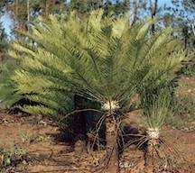

Hompejgji i Arbërit
Disa gjera të mbetura nga kohrat e Dinosureve
DINOARBI
Njohuri për dinosaurët
Teoria finale për zhdukjen e dinosaureve
Sëmundjet e dinosaureve
Vezet e dinosaureve
Tollovia te dinosauret
Dinosauret të cilet nuk i keni parë
Dinosaurët sundues
Gjera të mbetura nga kohet e dinosaureve
Gjurmët e këmbëve të dinosaurëve

Kur dinosauret ecnin nëpër fundërrina të buta apo nëpër baltë, vendi i thekur nganjëherë mjaftë shpejtë i ruante fërkemet e tyre. Paleontologistët, fërkemet e dinosaurëve i përdorin për të mësuar rreth dinosaureve se sa ecnin dhe modelet e ecjes. Këto fërkeme, gjenden në Arizona, ku janë të bëra nga një dinosaur të Periodës së Gjurasikut. Shumë dinosaur ecnin me dy këmbë dhe kanë qenë mishngrënës.
Parku krahinor
 Alberta ka të zhvilluar një sistem të gjerë të parqeve Provincale. Ato përfshijnë Kodrat Selvie të Parkut Interkrahinor, në juglindje të Kapelës Magjike, ku pyllëzonte kodrat dhe fillimet e rrafshnaltave më shumë se 460
Alberta ka të zhvilluar një sistem të gjerë të parqeve Provincale. Ato përfshijnë Kodrat Selvie të Parkut Interkrahinor, në juglindje të Kapelës Magjike, ku pyllëzonte kodrat dhe fillimet e rrafshnaltave më shumë se 460  m mbi stepe; Shënuar-në-Gurë të Parkut Provincal, në Lumin e Qumshtit në shkallën më të lartë të jugut, janë tablotë e lashta të gjetura në shkëmbit me gur ranor ku janë ende të padëshiruara. Parku Provincial i Dinosaureve, ka fosilet e dinosaureve dhe kafshë të tjera parahistorike ku mund të shihen në regjionin e Tokës jo Pjellore të Luginës së Drerit të Kuq;Parku Krahinor i dinosaurëve është në regjionin me tokë jo pjellore në Alberta të, Kanadasë.
m mbi stepe; Shënuar-në-Gurë të Parkut Provincal, në Lumin e Qumshtit në shkallën më të lartë të jugut, janë tablotë e lashta të gjetura në shkëmbit me gur ranor ku janë ende të padëshiruara. Parku Provincial i Dinosaureve, ka fosilet e dinosaureve dhe kafshë të tjera parahistorike ku mund të shihen në regjionin e Tokës jo Pjellore të Luginës së Drerit të Kuq;Parku Krahinor i dinosaurëve është në regjionin me tokë jo pjellore në Alberta të, Kanadasë.
Kycadet

Kycadet, të përngjarë në palmë nuk janë krejtësisht palma, por bimë shumë primitive të cilat kanë qenë klasë dominante gjatë kohës së dinosaureve. Ato tash shfaqen në tropikal, subtropikal, dhe në territore me temperatura të nxehta. Gjethet e çara atraktive të bimës-i lënë kopshtarit një farë të rëndësishëm për trashëgimi.
Prodhuar më;
1 janar 2003
Kontakto me mua në e-mailin tim:
kapreboys6@hotmail.com